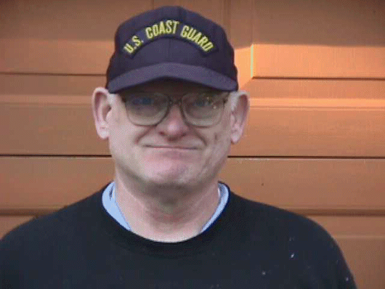
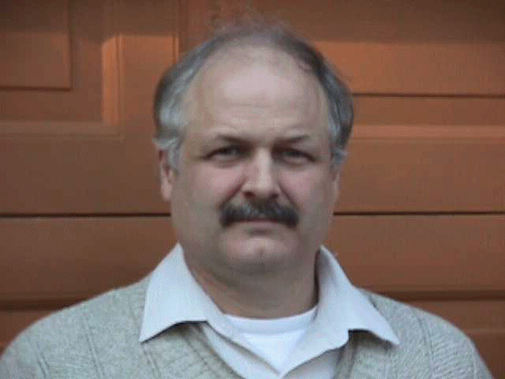

A Message from Our Founder
These are George’s own words, written when he built this site. Nothing has been changed.
This website is dedicated to RTTY as it was when it first was available as a new and exciting Amateur Radio operating mode.
The RTTY operator had to find some manner of teleprinter, learn how it worked and how to repair it, and then build all of the necessary electronics needed to make it run.
It is by nature a hobby which can be quite addictive, requiring untold hours reading books, searching junkyards, wheeling, dealing, experimenting and so forth — so that at last that whirring, oily black box would begin to print real words and messages.
The advent of the “Glass Teletype” was the beginning of the end of the mechanical teleprinter era. For a time it was a boon to the dedicated RTTYer, because suddenly the machines that had cost three hundred dollars could be acquired quite often for just carrying them out of the building.
Today the mechanical printers are history except in the hearts and minds of a dedicated few. This website is for that few, and it is hoped that by its existence interest in Mechanical RTTY will continue, and perhaps enjoy a rekindling.
This website is here for the world. It undergoes periodic changes and additions, and has been a learning experience. We welcome your comments and suggestions.
Below you see two photographs. The guy on the left is me, George, W7TTY. The fellow on the right is Bill, K7TTY.
I sold Bill his first teletype machine in 1968. He was fifteen at the time, and has been cursing me ever since. But without Bill’s coaching, encouragement, enthusiasm, and long hours, we could not say “click on the link below and enjoy…”


George Byron Hutchison, W7TTY, of Sequim, Washington, passed away on November 29, 2024, at the age of 82. He was the founder of RTTY.COM and the ITTY wire service — but to those who knew him, the website was only a small part of who he was.
George served in the United States Navy aboard submarines, and carried the discipline, loyalty, and quiet pride of that service with him for the rest of his life. He had many stories from those years, and he told them well.
In later years he ran a Quiznos sandwich shop, and when that chapter closed, George didn’t forget the people who had worked alongside him. He continued looking out for one of his employees long after there was any obligation to do so — because that was simply the kind of man he was. The people in his life came first, always.
Anyone who spent time with George came away with the same impression: here was a man who would give you his last dollar if he thought you needed it more than he did. He didn’t make a show of it. He just did it.
I am glad I got to know him. By carrying on RTTY.COM and the ITTY service, I hope to keep his memory alive in the community he loved and built.